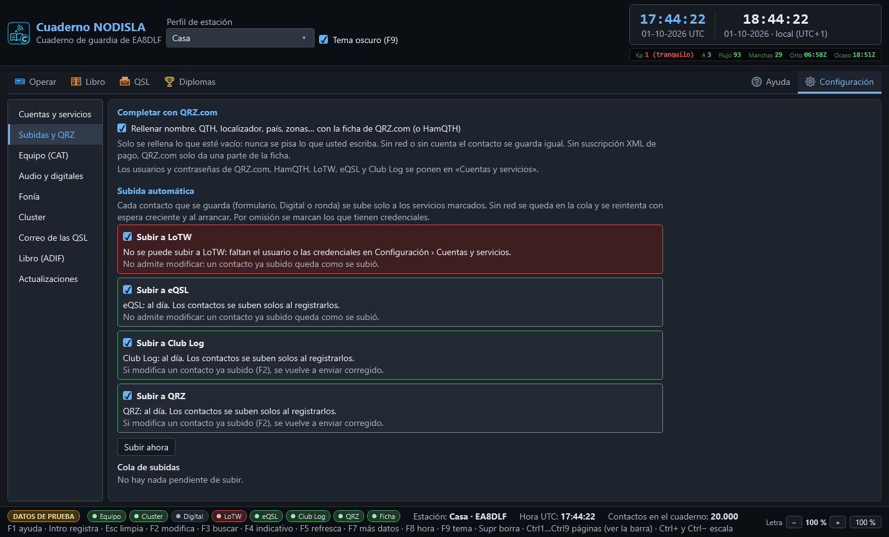
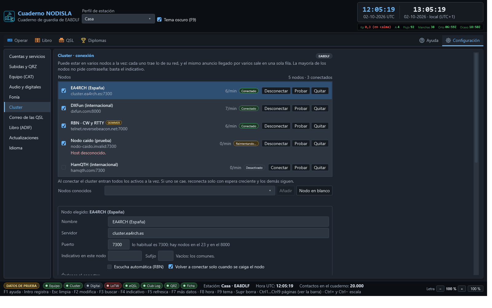
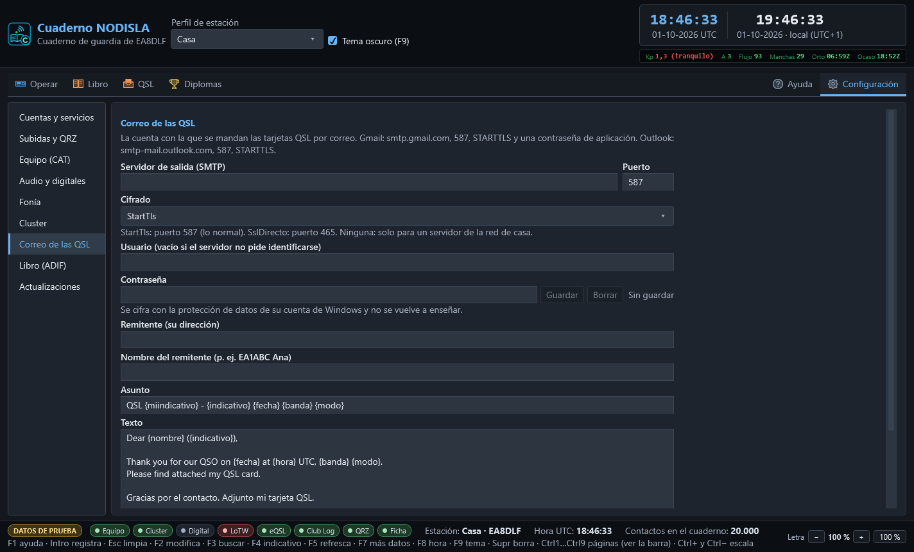

Configuración
Todo lo que se configura una vez y se olvida, y lo que hace falta para diagnosticar cuando algo no va. Lo que se mira mientras se opera —el estado de las conexiones— se queda en Operar; aquí está el resto.
Se abre con la entrada Configuración, a la derecha del todo de la barra (o con Ctrl 6). Va por apartados, con la lista a la izquierda:
| Apartado | Qué hay |
|---|---|
| Cuentas y servicios | Una tarjeta por servicio: QRZ.com, LoTW, eQSL.cc, Club Log, HamQTH, el cluster y el correo (SMTP) |
| Subidas y QRZ | Completar con la ficha de QRZ.com y la subida automática, con su cola |
| Equipo (CAT) | Por dónde habla el cuaderno con la radio y el PTT |
| Audio y digitales | Entrada y salida de sonido del equipo y cómo transmite y apunta el módem |
| Fonía | Altavoces, micrófono y PTT de fonía por el PC |
| Cluster | Los nodos (varios a la vez), su estado en vivo, el guion de arranque de cada uno y la consola cruda |
| Correo de las QSL | La cuenta con la que se mandan las tarjetas |
| Libro (ADIF) | Importar y exportar el cuaderno |
| Actualizaciones | Versión instalada, buscar versiones nuevas al arrancar o a mano |
| Servidor para otros programas | Servidores rigctld y TCI para que WSJT-X, JTDX, GridTracker… usen la radio a través del Cuaderno |

Cuentas y servicios
Cada servicio es una tarjeta con todo lo suyo junto: el usuario y los demás datos de la cuenta, sus contraseñas o claves, y una pastilla arriba a la derecha con su estado —verde Configurada, ámbar Incompleta (o «Falta TQSL», «Falta la contraseña»), gris Sin configurar—.
- QRZ.com — usuario, contraseña (para la ficha del corresponsal) y la Clave del cuaderno de QRZ (para subir contactos; la da QRZ en Logbook → Settings → API).
- LoTW — usuario, ubicación de estación de TQSL (el nombre que le puso en TQSL, no su indicativo), ruta de
tqsl.exesi no está en su sitio, contraseña de LoTW y frase de paso del certificado. La tarjeta dice con toda claridad por qué no se puede subir cuando falta algo —el certificado, la frase de paso otqsl.exe— y tiene Volver a comprobar. Antes de escribir la frase de paso, lea el aviso ámbar de la propia tarjeta. - eQSL.cc — usuario, apodo del QTH (si tiene varios) y contraseña.
- Club Log — correo de la cuenta, indicativo del cuaderno, contraseña y clave de API.
- HamQTH — usuario y contraseña; hace de reserva cuando QRZ.com no contesta.
- Cluster de DX — su estado: cuántos nodos hay y cuántos están conectados, cuáles están activos y con qué indicativo se entra; Configurar… lleva al apartado Cluster.
- Correo (SMTP) — su estado, Probar la conexión (se identifica sin mandar nada) y Configurar…, que lleva al apartado Correo de las QSL.
Un usuario vacío es el indicativo del perfil de estación, que es lo normal. Los datos de la cuenta se guardan con Guardar la cuenta; cada contraseña, con su propio Guardar.
Las contraseñas se guardan cifradas con la protección de datos de la cuenta de Windows (DPAPI). Una vez guardadas, el campo no se vuelve a rellenar: solo dice si hay algo guardado o no. Un secreto que se repinta en pantalla es un secreto que alguien puede leer por encima del hombro.
Subidas y QRZ


Completar con QRZ.com
La casilla Rellenar nombre, QTH, localizador… con la ficha de QRZ.com está marcada de fábrica. Hace falta la contraseña de QRZ.com (tarjeta QRZ.com); con la de HamQTH guardada, HamQTH hace de reserva. Solo se rellena lo vacío; nunca se pisa lo que usted escriba.
Subida automática
Una casilla por servicio: LoTW, eQSL, Club Log y QRZ (el cuaderno de QRZ.com, con la Clave del cuaderno de QRZ). De fábrica se marcan solas las que tienen credenciales guardadas; si toca una casilla, se queda como usted la deje.
Todo contacto que se guarda (formulario, Digital o ronda) entra en la cola de subidas. La cola se guarda en disco: sin red, o si el servicio falla, se reintenta sola con espera creciente (1, 2, 4… minutos, hasta una hora) y otra vez al arrancar el programa. Después de 8 intentos fallidos el contacto queda marcado como fallido y la pastilla se pone roja; Subir ahora lo reintenta todo en el momento.
Debajo de cada servicio se lee su estado con palabras y si admite correcciones: Club Log y QRZ reciben de nuevo un contacto modificado con F2; LoTW y eQSL no admiten modificar lo ya subido. LoTW necesita TQSL instalado con su certificado y la ubicación de estación: si falta, la pastilla lo dice y no se reintenta en bucle; en cuanto se arregla, sale todo solo.
La importación de un ADIF no sube nada: solo se suben los contactos que se registran o se modifican en el programa.
La primera vez:
- En Cuentas y servicios, tarjeta QRZ.com: guarde la contraseña y, si quiere subir al cuaderno de QRZ, la Clave del cuaderno de QRZ.
- Tarjeta LoTW: instale TQSL con su certificado, guarde la contraseña de LoTW, escriba la ubicación de estación de TQSL y pulse Guardar la cuenta.
- Tarjetas eQSL.cc y Club Log: contraseñas, clave de API de Club Log y el correo de la cuenta.
- Mire que las pastillas de las tarjetas, y las de la barra de estado, se pongan verdes.
Equipo (CAT)
Aquí se elige por dónde habla el cuaderno con la radio. Si esto se queda en «Ninguna», el botón «Conectar» del panel del equipo no abre nada.

- Vía de control: CAT nativo (Yaesu e ICOM) por puerto serie,
rigctldde Hamlib por TCP, u OmniRig. - Fabricante y Modelo (CAT nativo): el FT-710 y los demás Yaesu e ICOM de Equipos, o la detección automática. Los que no son el FT-710 salen marcados «según manual, sin probar con radio». En ICOM, la dirección CI-V si se cambió en la radio.
- Puerto y velocidad (CAT nativo) — con detección automática si no se sabe el puerto: prueba primero por donde estaba y, si no contesta, recorre todos los puertos preguntando identificación. La detección es por lo que contesta el equipo, nunca por el número de puerto, porque puede haber otro aparato hablando también por serie en la misma máquina. La velocidad la manda el equipo, no el cable — en el FT-710, MENU › OPERATION SETTING › GENERAL ›
CAT-1 RATE; use el puerto Enhanced a 115.200. - Máquina y puerto TCP (rigctld) — normalmente
127.0.0.1y el4532de siempre, conrigctldya arrancado de antemano. - Número de equipo (OmniRig) — OmniRig maneja dos radios, la 1 y la 2; aquí se dice cuál sigue el cuaderno.
- PTT: por dónde se sube — CAT, un puerto serie aparte con RTS/DTR, o VOX —, el tiempo máximo en antena (de fábrica 180 s, tope duro 600 s) y el tiempo sin latido tras el que se suelta solo. El vigilante de PTT baja el PTT pase lo que pase: al agotarse el tiempo, si quien transmite deja de dar señales de vida, si salta un fallo, o al cerrar el programa. Un PTT pegado quema la etapa final, y esta es la única pieza del programa pensada explícitamente para que eso nunca pueda pasar.
El botón «Probar» abre la conexión, lee identificación, frecuencia y modo, y cierra — nunca transmite. «Aplicar» guarda y cambia la vía sin cerrar el programa; «Descartar» vuelve a lo guardado.
Audio y digitales

Por dónde entra y sale el sonido del equipo. Todos los modos digitales los hace el módem propio del programa (ver Digital); no hace falta ningún otro programa. Los dispositivos de entrada y salida de audio se eligen de la lista de dispositivos de Windows; el que corresponde al codec USB del equipo sale marcado «EL EQUIPO» y el primero de la lista, emparejado por el identificador de contenedor USB, no por el nombre — así no hay que adivinar cuál es entre veinte dispositivos con nombres parecidos. Probar el nivel es la única acción de esta pantalla que abre de verdad la tarjeta de sonido; se cierra sola al parar la prueba o al salir.
Al final, el apartado Telegrafía (CW): tono por omisión, ancho del filtro, sensibilidad, velocidades mínima y máxima y cuántas señales se leen a la vez. Ver Telegrafía (CW).
Fonía
Altavoces, micrófono y el PTT de fonía por el PC. Ver Fonía por el PC.
Cluster


El cuaderno puede estar en varios nodos a la vez. Arriba está la lista de nodos, con su estado en vivo:
- La casilla de la izquierda es Activo: los activos entran todos a la vez al pulsar Conectar en el panel del cluster; uno sin marcar se queda en la lista sin conectar.
- La pastilla dice cómo va: Conectado (verde), Conectando o Reintentando (ámbar), Conexión fallida (rojo, por ejemplo un indicativo rechazado, que no se reintenta) o Desactivado. Debajo, en rojo, el motivo del último fallo. Al lado, cuántos anuncios por minuto trae.
- Cada fila tiene sus botones: Conectar/Desconectar ese nodo sin tocar los demás, Probar (abre el puerto y lee el saludo del nodo sin entrar con su indicativo) y Quitar.
- SKIMMER marca los nodos de escucha automática (Reverse Beacon Network): todo lo que traen sale como de máquina y se puede esconder en el panel del cluster.
Para añadir un nodo, elíjalo en Nodos conocidos y pulse Añadir, o pulse Nodo en blanco para escribir uno que no esté. La lista trae nodos DXSpider, AR-Cluster y CC Cluster de Europa y América y las dos redes de escucha automática de la RBN (telegrafía/RTTY en el puerto 7000 y FT8/FT4 en el 7001). Los que no contestaban cuando se comprobó la lista salen marcados «sin comprobar».
Al elegir un nodo de la lista se edita debajo: nombre, servidor, puerto, indicativo y sufijo propios (vacíos, los comunes; útil para entrar como EA8DLF-2 en un segundo nodo de la misma red), escucha automática, reconexión, el guion de arranque — las órdenes que se mandan nada más entrar, una por línea, con <CALLSIGN> y <PASSWORD> como comodines (los set/ y filter de ese nodo) — y su contraseña, si la pide: cada nodo tiene la suya, cifrada igual que las demás credenciales.
Más abajo, lo común: el indicativo con el que se entra (vacío, el del perfil de estación activo) y el sufijo; cómo se juntan los anuncios repetidos (tolerancia en kHz, 1 por omisión, y ventana en minutos, 10 por omisión); y los tiempos de reconexión — la espera crece en cada intento hasta el tope — y de silencio máximo antes de dar la conexión por muerta.
Aplicar pone la lista en marcha sin cerrar el programa: los nodos que no han cambiado siguen conectados, los cambiados se reconectan y los quitados se cierran (y su contraseña se borra del almacén).
El nodo que se tenía configurado antes de poder tener varios pasa a ser el primero de la lista, con todo lo que tenía, también la contraseña guardada.
La consola cruda — todo lo que mandan los nodos y no es un anuncio — vive en este mismo apartado, no en Operar. Con varios nodos cada línea lleva delante el nombre de su nodo, y el desplegable junto a la orden dice a qué nodo se manda: las órdenes y los spots propios (DX 14025 …) van solo a ese nodo, nunca a todos, para que no salgan repetidos en toda la red.
Correo de las QSL


La cuenta con la que se mandan las tarjetas QSL por correo: servidor SMTP, puerto, cifrado (StartTls en el 587, SslDirecto en el 465), usuario, contraseña (cifrada, con «Guardar»), remitente, asunto y texto con variables, y si la tarjeta va en JPG o PNG. Probar la conexión se identifica en el servidor sin mandar nada. Detalles en Tarjeta QSL propia.
Libro (ADIF)
Cuántos contactos hay, y los botones «Importar ADIF…» y «Exportar ADIF…» para traer o sacar el cuaderno completo. Cada importación deja su parte a la vista, con las confirmaciones rescatadas al fundir duplicados destacadas aparte — la misma pantalla que aparece la primera vez con el cuaderno vacío, disponible aquí en cualquier momento.
Actualizaciones
La versión instalada, la casilla Buscar versiones nuevas al arrancar (como mucho una vez al día) y el botón Buscar actualizaciones. Es el mismo aviso que la barra de arriba y que Ayuda › Buscar actualizaciones. Ver Ayuda, actualizaciones y fallos.
Servidor para otros programas
Los servidores rigctld compatible (puerto 4532) y TCI (puerto 40001), apagados de fábrica y solo para este PC; la red local con su lista de IP; los permisos (cambiar la radio y Permitir TX a clientes externos); los programas conectados en vivo, con Desconectar; y quién pidió transmitir. Ver Conectar otros programas.